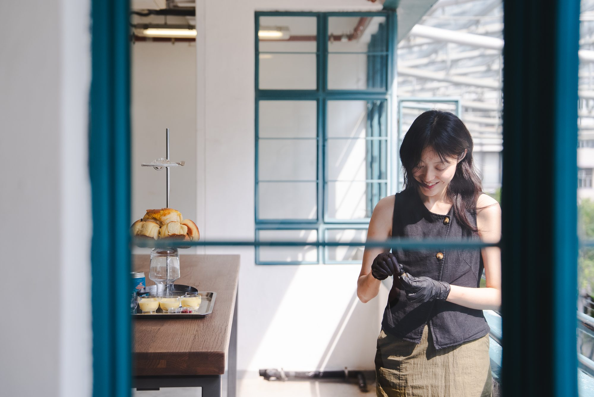
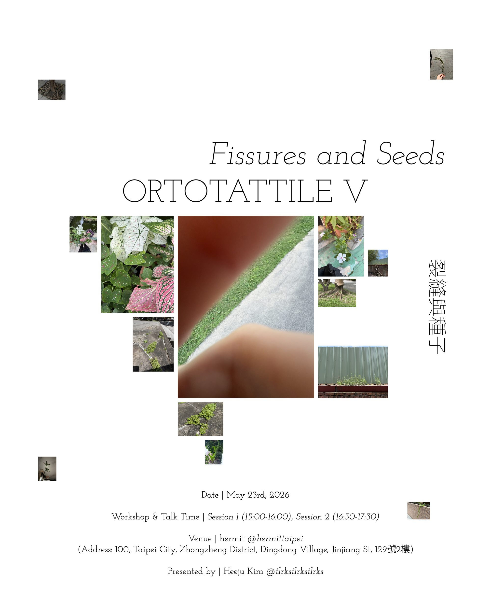
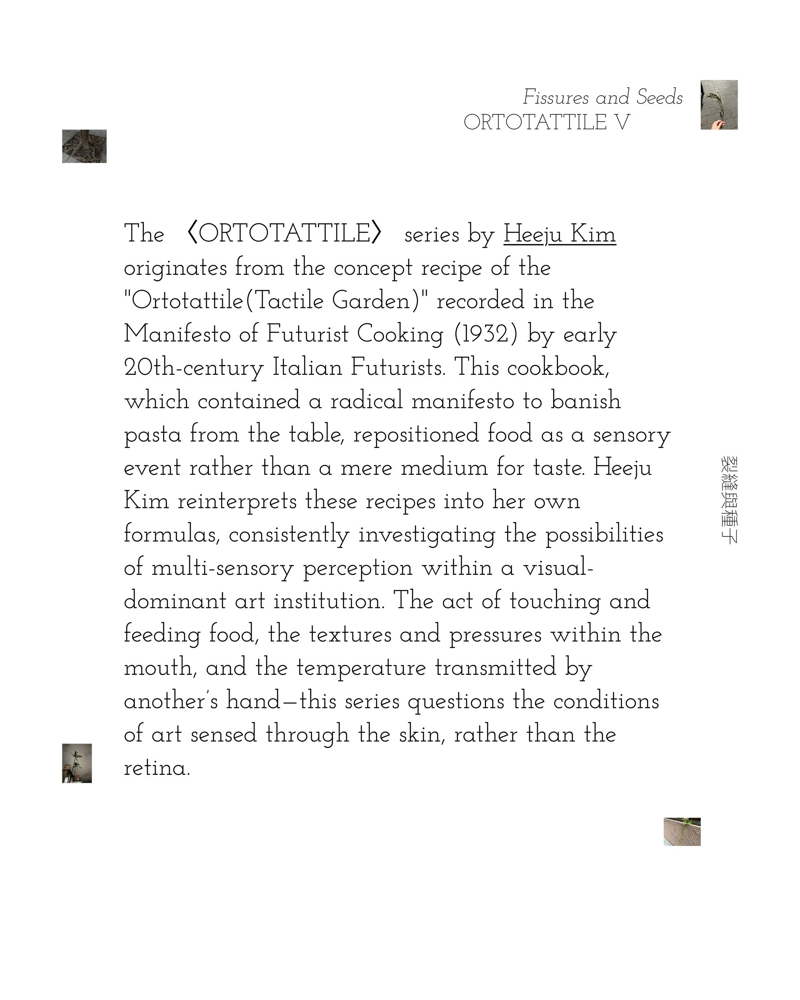
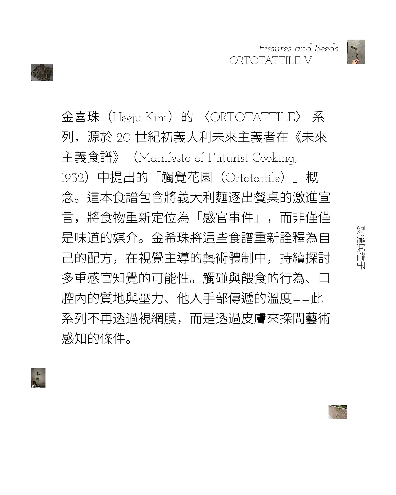
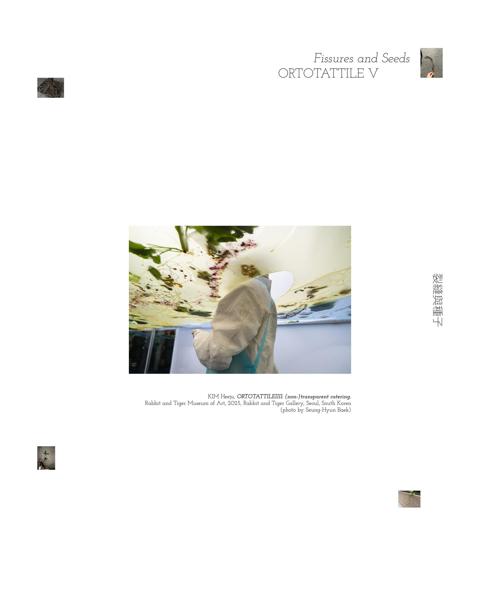
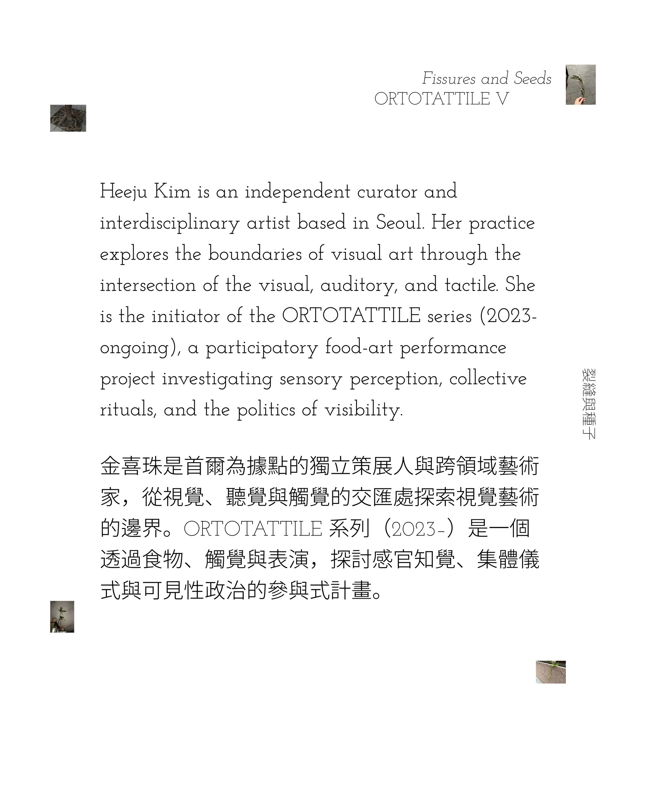
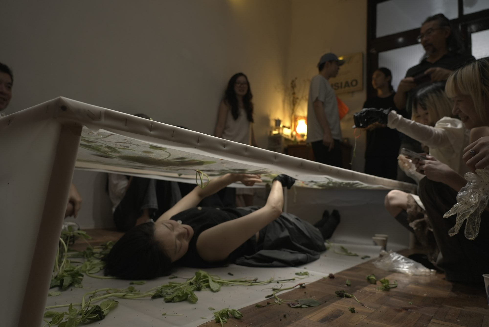

Heeju Kim is an independent curator and interdisciplinary artist based in Seoul. Her practice explores the boundaries of visual art through the intersection of the visual, auditory, and tactile. She is the initiator of the ORTOTATTILE series (2023-ongoing), a participatory food-art performance project investigating sensory perception, collective rituals, and the politics of visibility.
金喜珠是首爾為據點的獨立策展人與跨領域藝術家，從視覺、聽覺與觸覺的交匯處探索視覺藝術的邊界。ORTOTATTILE 系列（2023–）是一個透過食物、觸覺與表演，探討感官知覺、集體儀式與可見性政治的參與式計畫。
서울을 기반으로 활동하는 김희주는 시각-청각-촉각의 교차점에서 시각 예술의 경계를 탐구하는 독립 큐레이터이자 다학제 예술가다. 인간과 비인간의 구분을 넘어 진동을 통한 대안적 공명을 그려내는 〈Ground of Vibration〉(2024), 〈Ground of Vibration: Aqueous Layer〉(2024)를 선보였으며, 20세기 초 이탈리아 미래주의 레시피를 자신의 포뮬라로 재해석한 참여형 퍼포먼스 워크숍 〈ORTOTATTILE〉(2023)를 통해 다중 감각 인식을 제안했다. 이 프로젝트는 〈ORTOTATTILE II: Baguette of Solidarities〉(2024)로 확장되며, 바게트 단면의 기공을 채운 재료의 밀도를 매개로 민주 사회에서의 연대와 집단적 목소리를 탐구하는 실험으로 이어졌으며, 〈ORTOTATTILE IV: (non-)transparent catering〉(2025)은 케이터링의 프레임을 통해 미술관 시스템, 제도적 노동, 그리고 그 형식 안에 내재된 이중성을 들여다본다.
© 2026 Heeju Kim. All Rights Reserved.
ORTOTATTILE V: Fissures and Seeds
The 〈ORTOTATTILE〉 series by Heeju Kim originates from the concept recipe of the "Ortotattile(Tactile Garden)" recorded in the Manifesto of Futurist Cooking (1932)¹ by early 20th-century Italian Futurists. This cookbook, which contained a radical manifesto to banish pasta from the table, repositioned food as a sensory event rather than a mere medium for taste. Heeju Kim reinterprets these recipes into her own formulas, consistently investigating the possibilities of multi-sensory perception within a visual-dominant art institution. The act of touching and feeding food, the textures and pressures within the mouth, and the temperature transmitted by another’s hand—this series questions the conditions of art sensed through the skin, rather than the retina.
Aristotle’s theory of hylomorphism explains all existence as a combination of matter (hyle) and form (morphe). In the traditional schema, form is the active principle that defines matter, while matter is the passive foundation that receives form. The practice of 〈ORTOTATTILE〉 creates a fissure in this hierarchy. The protocol provided by Kim performs the role of "form," but it is an open structure realized only through the execution of diverse bodies, rather than a fixed appearance. In the face of each participant’s hand temperature, pressure, rhythm, and the texture of the food, the protocol cannot remain a static form. Matter does not passively receive form; it actively redefines the meaning of form. At this juncture, 〈ORTOTATTILE〉 transcends the logic of simple participatory performance. It is not merely that the participant's body completes the work, but that the matter of the participant's body constitutes the ontological condition of the work differently every time.
While this practice sits within the lineage of relational practice, it does not stop at staged social interaction. 〈ORTOTATTILE〉 moves beyond because it explicitly inscribes the "ethics of care" into the structure of exchange. The act of feeding is not a one-sided provision of care. The mutual vulnerability between the feeder and the fed, the sower and the bloomer, becomes the condition for exchange. This vulnerability does not sentimentally suture the relationship; instead, it generates a relationship as a process where different tactile rhythms frictionally align.
Within this structure, the artist's body becomes a site that overturns the hierarchy of hylomorphism through the physical self. In Aristotle's schema, matter is defined as the passive base that receives form, but here the artist's body operates as active matter that receives seeds and brings forth vegetables. It is matter that generates form itself, rather than being granted it. In Vito Acconci’s Seedbed (1972), the artist lay beneath a gallery floor and masturbated, using the footsteps of the audience as stimulation; that body was closed within extreme self-referentiality. Heeju Kim’s recumbent body operates in the opposite direction. This body, which receives seeds and releases vegetables, is open toward the "other" and circulates rather than being depleted. The translucent TPU membrane creates a middle ground that is neither complete visibility nor complete concealment, where the artist remains as a vaguely visible material presence.
The TPU membrane, which first appeared in the previous series 〈Ortotattile IV: (non-)transparent catering〉 (2025), was a device metaphorizing the (in)visibility of museum labor. The act of the audience searching for holes in the membrane and picking up food was itself a performance that made visible the invisible labor of the caterer. In 〈ORTOTATTILE V: Fissures and Seeds〉, the membrane shifts into a different material condition. The holes are no longer metaphors for institutional concealment but actual crevices through which seeds pass. The domestic living room space connecting rooms, the pre-punctured holes in the TPU, and the seeds and vegetables moving through them—in this work, fissures are a material condition, not a rhetoric.
The work takes place at hermit, an art space converted from the living room of a standard apartment in Taipei City. It is part of an actual home where the space's directors live together with one cat and two daughters, aged one and five. This space—which is neither a museum nor a white cube—is a place where everyday care is already being practiced. Moving to the most intimate space outside the institution is not a mere change of venue. hermit is the space the 〈ORTOTATTILE〉 series has chosen to practice care and trust most literally.
May 23, 2026, when the performance takes place, falls during Taiwan's plum rain season (梅雨, Méiyǔ) and the plum harvest period. The artist sprays an ingestible mist made from the Korean traditional beverage sujeonggwa to replicate the external rain within the interior space. Audience participants, following the logic of that season, gather vegetables from beyond the TPU membrane as if harvesting plums. As the exterior rain and interior mist intersect, the apartment living room gallery performs the function of a tactile garden. Various vegan ingredients from Taiwan and ingredients sourced from Korea are placed together on a single table, visualizing the material convergence of two distinct locations. In this space where plum rain and mist, seeds and vegetables, and ingredients from two regions intersect, 〈ORTOTATTILE V: Fissures and Seeds〉 completes the tactile garden not as concept but as material event.
(Text by Heeju Kim)

ORTOTATTILE V: Fissures and Seeds,
2026.
hermit, Taipei City, Taiwan